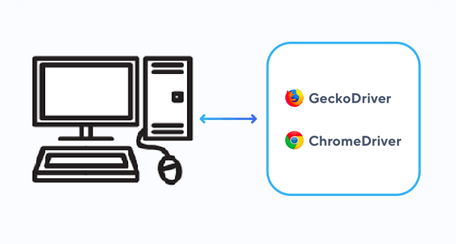
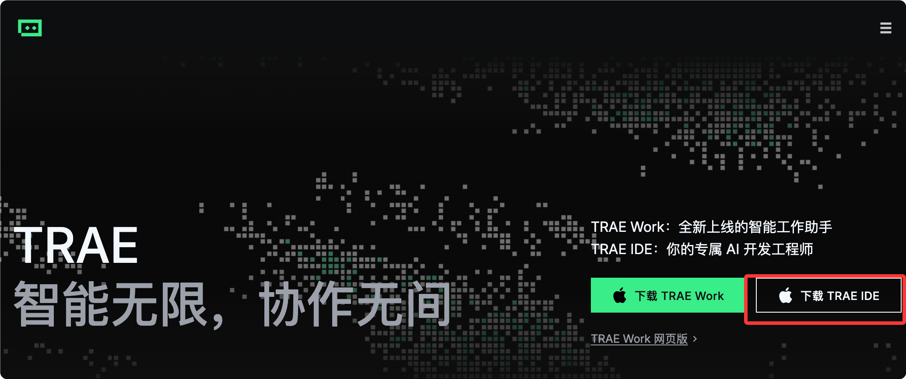

终端工具推荐
Claude Code、Codex CLI、OpenCodeを使って開発をする場合、これらのツールはすべてターミナル上で動作する。 多くの人はインストールしたらそのまま使い、macOS標準のTerminal.appを使っている。またはWi...

什么是张量？
:root{ --bg: #F3F5F6; --surface: #FFFFFF; --ink: #14181F; --muted: #5B6472; --line...

如何在 Windows 上将 Python 添加到 PATH
当你看到 'python' is not recognized as an internal or external command 这个错误时，说明 Windows 无法在 PATH 环境变量中找到 Python 的...
Linux Cron 定时任务
.runoob-linux-cron-container { max-width: 1200px; margin: 0 auto; padding:...

REST API 教程
REST（Representational State Transfer）は、ネットワークアプリケーションのインターフェースを設計するためのソフトウェアアーキテクチャスタイルである。 REST API（Application Programming Interface...（アプリケーション・プログラミング・インターフェース）...
Python 进度条
Python ではプログレスバーを実現する方法がいくつかあります。以下に一般的な方法をいくつか紹介します： 例 import time for i in range(101): # 添加进度条图形和百分...

ChromeDriver 说明
ChromeDriverは独立したサーバーであり、Selenium WebDriverとGoogle Chromeブラウザの間の橋渡し役となる。 ChromeDriverにより、開発者はプログラムを通じて...（プログラムによって制御することが可能になる）...
pip 指定国内镜像，并设置不使用 https
使用 pip 安装包，有时候会出现以下问题： Could not fetch URL https://pypi.org/simple/pip/: There was a problem confirming the ssl ...

Trae 入门教程
Trae（/treɪ/）は、ByteDanceが開発した開発者向けのAI駆動型統合開発環境（IDE）です。Cursorに似ており、中国語に対応し、ClaudeやGPT-4oモデルを統合しています。現在...

Dify 零门槛打造专属 AI 应用
项目名: Dify -- 零门槛打造专属 AI 应用 Github 开源地址： https://github.com/nashsu/FreeAskInt...